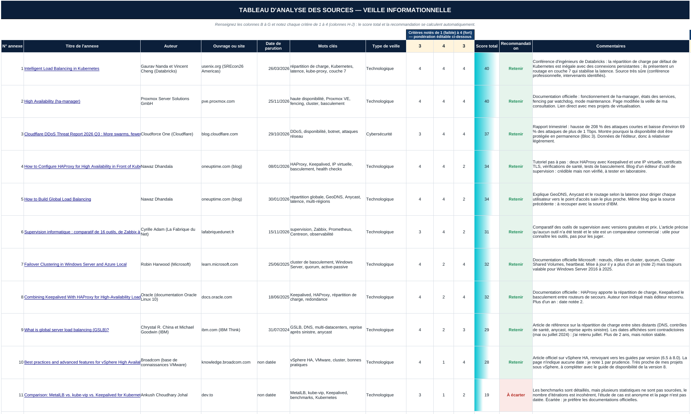

Tableau d'analyse des sources
Chaque source de ma veille sur la haute disponibilité et la répartition de charge est évaluée selon trois critères, puis retenue ou écartée.
Sources analysées11
Sources retenues10
Sources écartées1
Taux de validation91 %
Méthode de notation
Chaque critère est noté de 1 (faible) à 4 (fort). Le score total est pondéré : pertinence du thème × 3 + date × 4 + fiabilité de la source × 3. Une source est retenue à partir de 24 points sur 40.
| Note | 1 | 2 | 3 | 4 |
|---|---|---|---|---|
| Pertinence du thème | Aucune pertinence | Thème qui manque de lien | Thème en lien | Très pertinente |
| Date | Plus de 3 ans | 2 à 3 ans | Moins d'un an | Année en cours |
| Fiabilité de la source | Source non crédible | Crédible mais non vérifiée | Vérifiée et fiable | Source très sûre |
Le tableau

Liens vers les sources
- Intelligent Load Balancing in Kubernetes
- High Availability (ha-manager)
- Cloudflare DDoS Threat Report 2026 Q3 : More swarms, fewer giants
- How to Configure HAProxy for High Availability in Front of Kubernetes
- How to Build Global Load Balancing
- Supervision informatique : comparatif de 16 outils, de Zabbix à Datadog
- Failover Clustering in Windows Server and Azure Local
- Combining Keepalived With HAProxy for High-Availability Load Balancing
- What is global server load balancing (GSLB)?
- Best practices and advanced features for vSphere High Availability
- Comparison: MetalLB vs. kube-vip vs. Keepalived for Kubernetes Load Balancing